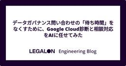

LegalOn Technologies Engineering Blog
https://tech.legalforce.co.jp/
LegalOn Technologies 開発チームによるブログです。
フィード

データガバナンス問い合わせの「待ち時間」をなくすために、Google Cloud診断と相談対応をAIに任せてみた 1
1
LegalOn Technologies Engineering Blog
はじめに こんにちは。LegalOn Technologiesのデータチームで Head of Data をしている若菜です。前回の記事「全社横断のデータガバナンスを実現するためにデータワーキンググループを設立・運営した」では、データマネジメントとガバナンスを統括する専門部会「データワーキンググループ（DWG）」の体制を紹介しました。あわせて、その基盤となる情報資産ガイドラインについても紹介しました。 前回の記事では、問い合わせの一次受けとしてCustom GPTやコーディングエージェントを活用している話に触れました。今回はその発展形として、DWGが日常的に運用している2つのClaude / …
1日前

非エンジニアのサポート担当者がCodex + Datadogでログ調査できるようになった話
LegalOn Technologies Engineering Blog
はじめに LegalOn Technologies でCRE 兼 カスタマーリレーショングループリーダーの長内(@Nick)です。 現在私は、CREとして業務を行いながら、ユーザーサポートメンバーのマネジメントを担当しています。今回のブログでは、非エンジニアのユーザーサポートチームが、Codexを利用したログ調査を自ら行うようになり、一次対応のスピード向上と開発部門の負担軽減を両立できた話をお伝えします。 非エンジニアメンバーを率いるマネージャーの方や、社内のAI活用を推進したいエンジニアの方の参考になれば幸いです。 （久しぶりのEngineering Blogになりますが、以前公開したこちら…
9日前
LegalOn Technologiesで7ヶ月インターンした話 — 読み順が崩れる官報PDFをLLMで構造化した
LegalOn Technologies Engineering Blog
はじめに LegalOn Technologiesで2025年12月から2026年6月までの約7ヶ月間、SWE（Software Engineer）としてインターンをしていた tsukune です。 本記事では、インターンで取り組んだ技術課題とその体験から得ることができた学びについてまとめます。 インターン開始時の自分のスペック 情報専攻のB2（今はB3です） インターン経験はあったが簡単なAPI・DB設計ができる程度 Pythonの業務経験やインフラ知識は皆無
1ヶ月前
初めての新卒SWEインターンを、一緒に取り組んだメンターの視点から振り返る
LegalOn Technologies Engineering Blog
はじめに LegalOn Technologiesでは、2027年卒からソフトウェアエンジニア（SWE）の新卒採用を本格的にスタートします。 以前公開した「初めての新卒SWEインターンはどう始まったか。プロジェクトメンバーで振り返る」では、新卒採用本格スタートに向けた長期インターンシップの、設計から選考、受入れまでの裏側をお届けしました。今回はその続編として、実際にインターン生を受け入れた各チームのメンターに話を聞きました。 どんなタスクを任せたのか、どんな成長を期待したのか、そしてメンター自身がどんな学びを得たのか。初めてのSWEインターンを現場視点で振り返ります。 今回話を聞いたのは以下の…
1ヶ月前
LREC 2026 参加レポート— 法務ドメインの日本語ベンチマーク「LegalRikai」を発表
LegalOn Technologies Engineering Blog
はじめに こんにちは、株式会社LegalOn Technologies の藤田と申します。「WorkOn」事業部に所属し、AIアシスタント機能の開発に携わっています。 この記事は、2026年5月13日から15日に開催された、国際学会 LREC 2026 の参加レポートです。当社は1件の学会発表を行いました。本記事では、その参加の様子や発表内容をご報告します。 lrec2026.info
2ヶ月前
【登壇レポート】ソフトウェアテストシンポジウム JaSST'26 Tokyo
LegalOn Technologies Engineering Blog
はじめに こんにちは！株式会社LegalOn Technologies、SET（Software Engineer in Test）の引持(@rmochioo)です。普段は自動テストの推進やQA部門横断の施策に取り組んでいます。 2026年3月20日(金・祝)、東京ビッグサイト会議棟にて「ソフトウェアテストシンポジウムJaSST’26 Tokyo」が開催されました。私は「QAプロセスAI支援ツールキットの導入とその効果について」というタイトルで、登壇しました。 本記事では、当日お話しした内容についてと、印象に残った発表を幾つかピックアップしてご紹介したいと思います。
4ヶ月前
AI時代の最適なチームサイズを考える
LegalOn Technologies Engineering Blog
はじめに こんにちは、LegalOn TechnologiesでCTOをしている深川です。実は来週第一子が出産予定でドキドキワクワクがとまりません。 最近、社内向けに「AI時代の開発チームサイズ」に関するガイドラインを策定しました。AIによるコード生成・テスト・レビューの能力が急速に向上するなかで、開発チームの最適な人数は何名なのか——これは多くの開発組織が直面しているテーマだと思います。 本記事では、そのガイドラインの中から「チームサイズの検討」の部分を切り出し、対外的に共有できる形でお届けします。完璧な正解ではありませんが、同じような課題に向き合う方々の参考になれば幸いです。
4ヶ月前
社内デザインシステム「Aegis」を用いた実装精度を30%から90%以上に引き上げた Agent Skills の開発方法
LegalOn Technologies Engineering Blog
はじめに こんにちは、株式会社LegalOn Technologies ソフトウェアエンジニアのわたりょーです。デザインシステムチームに所属し、社内デザインシステム「Aegis」を開発・運用しています。 「Aegis」は、LegalOn Technologiesのプロダクト群で一貫した UI を実現するための社内デザインシステムです。UI コンポーネントライブラリ、デザイントークン、ガイドラインなどを提供し、複数プロダクトの開発効率と品質を支えています。 本記事では、AI コーディングエージェント（Claude Code / Codex など）向けに Agent Skills（以下、Skill…
4ヶ月前
初めての新卒SWEインターンはどう始まったか。プロジェクトメンバーで振り返る
LegalOn Technologies Engineering Blog
はじめに LegalOn Technologiesでは、以前CTOの深川がブログで宣言したように、2027年卒からソフトウェアエンジニア（SWE）の新卒採用を本格的にスタートします。 今回は、その取り組みの一環として実施した、新卒SWE向け長期インターンシップについて、設計から選考、受入れまでの裏側をプロジェクトメンバーで振り返ってもらいました。 今回話を聞いたのは以下のメンバーです。 深川：執行役員・CTO 本プロジェクトの総監督。最終面接を担当。 荒崎：CXOn, Senior Engineering Manager 技術課題の作成と技術面接を担当。 森山：LegalOn, Senior …
4ヶ月前
「言語処理学会第32回年次大会（NLP2026）」参加レポート
LegalOn Technologies Engineering Blog
はじめに こんにちは、株式会社LegalOn Technologies MLエンジニアの藤田と申します。GenAIチームに所属しており、現在は契約書レビューシステムの開発を行っています。 この記事は、2026年3月9日～3月13日に行われた「言語処理学会第32回年次大会（NLP2026）」 の参加記録となります。当社では1件の学会発表を行いました。 本記事では、その参加の様子や発表内容をご報告します。
4ヶ月前
全社横断のデータガバナンスを実現するためにデータワーキンググループを設立・運営した
LegalOn Technologies Engineering Blog
はじめに はじめまして、こんにちは。LegalOn TechnologiesでHead of Dataをしている若菜です。データ部門では、データアナリスト、データエンジニア、アナリティクスエンジニアが所属しており、日夜データに関連する施策に取り組んでいます。 記事タイトルにもある「データガバナンス」と聞くと、ルールで開発を縛る"守り"の活動をイメージされる方も多いかもしれません。しかし私たちは、ガバナンスは開発を止めるものではなく、加速させるものだと考えています。明確な基準があるからこそ、開発者は「このデータを使って良いのか」と迷う時間がなくなり、安心してデータを活用できる。結果として、事業の…
4ヶ月前
実装プラン作りの難しさを LLM × Linear で解決する ― Project壁打ちSkillの紹介
LegalOn Technologies Engineering Blog
はじめに こんにちは。プロダクト開発基盤チームのYoshioka（@tsuyogoro）です。 LLMによるコーディングが当たり前になり、チームでも人力でコードを書く場面は減ってきました。一方で、手戻りが起きやすいのは実装そのものより「実装の前」だという感覚は残っています。 何をどう分解するか どの順序で進めるか 依存関係や完了条件をどう定義するか ここが曖昧なままだと、あとから設計や優先順位が崩れ、「進んでいるのに進んでいない」状態になりがちです。こうした経験に心当たりのある方も多いのではないでしょうか。さらに計画フェーズは認知負荷が高く、人間がボトルネックになりやすい傾向があります。 そこ…
4ヶ月前
共変量を考慮した顧客利用率モデリング ― 分位点回帰によるTier設計
LegalOn Technologies Engineering Blog
はじめに はじめまして、株式会社LegalOn Technologies（職種: データ分析）の上野と申します。現在、データ分析チームに所属し、データとML/AIを用いた営業支援活動を行っております。 2つの既存サービス「LegalForce」と「LegalForceキャビネ」がひとつになり、次世代の法務AI「LegalOn」として産声を上げてから、早いもので2年が経とうとしています。 プロダクトの統合によって、利便性は大きく向上しました。と同時に、サービス形態の変更により、お客様との契約方法も大きくアップデートされております。この新しい環境の中で、弊社営業部門がお客様と密接で継続的なコミュニ…
4ヶ月前
汎用AI Agentにおけるテストの難しさと観点整理
LegalOn Technologies Engineering Blog
はじめに こんにちは、株式会社LegalOn TechnologiesでSET (Software Engineer in Test)のポジションで仕事をしている島根(@shimashima35)と申します。 この記事では、汎用的なAI Agentシステムを自社開発するにあたってのテスト戦略やテスト観点についての私の考察を紹介します。「汎用的なAI Agentシステム」とは、特定の業務やアプリに特化せず、ユーザーの自然言語の指示をもとに複数の外部サービス（例：Google Workspace など）と連携しながらタスクを実行できるAI Agentのことです。さらに、API連携に加えてブラウザ操…
5ヶ月前
マルチリージョン・マルチプロダクトプラットフォームのためのDatadog活用術
LegalOn Technologies Engineering Blog
はじめに こんにちは、株式会社LegalOn TechnologiesでSREをしている石垣と申します。 2026年1月31日に開催された「SRE Kaigi 2026」にて登壇する機会をいただき、弊社のSRE Enablingの歴史をお話ししました。トピックの一つとしてObservabilityの向上策をお話ししたのですが、そこでObservability BackendとしてDatadogを導入したことについて触れました。しかし、発表時間の都合上、弊社でDatadogをどう使っているかについては泣く泣く割愛することになりました‥。Datadogの活用事例として参考になればと思い、今回ブログ…
5ヶ月前
マルチプロダクトを支えるProtocol Buffers基盤をどう内製化したか
LegalOn Technologies Engineering Blog
はじめに LegalOn Technologiesのプロダクト開発基盤チームでPlatform Engineerをしている Saso (@rendaman0215) です。 弊社では、全社的にProtocol Bufferを使って製品のAPIスキーマの管理をしており、BSR（Buf Schema Registry）を使ってProtocol Buffersを管理していましたが、自社製の管理基盤に移行しました。 本記事では、なぜ移行したのかの背景からどう移行したかのプロセス、その過程で苦労したことや気づきについてご紹介します。
5ヶ月前
【セッションレポート】Building an AI-Native Engineering Team
LegalOn Technologies Engineering Blog
はじめに こんにちは、AI-powered Development CoEの時武(@tokichieto)です。 LegalOn Technolgoiesでは先日、OpenAI社のエンジニアをオフィスにお招きし、「Building an AI-Native Engineering Team」と題したセッションを開催しました。本記事では、そのセッションの様子と、そこで語られた「AIネイティブな開発チーム」になるための具体的なプラクティスや気付きについてお届けします。
6ヶ月前
Platform as a Product：プロダクト開発基盤の2025年
LegalOn Technologies Engineering Blog
こんにちは、プロダクト開発基盤チームでEngineering Managerをしている Yoshioka (@tsuyogoro) です。 2025年、LegalOn Technologiesはマルチプロダクト戦略を掲げ、複数の新規事業プロダクトを同時にスタートしました。本記事では、その開発を支える基盤チームの立ち上げから運営まで、「プラットフォームもプロダクトだ」という考え方をどう実践してきたかをご紹介します。完璧な正解ではなく、試行錯誤の記録として、同じような課題に向き合う方々の参考になれば幸いです。 この記事は以下のような方に向けて書いています プラットフォーム/開発基盤チームのリードや…
7ヶ月前
AWS Lambda から GKE への移行で遭遇した"見えないボトルネック"の正体と解決策
LegalOn Technologies Engineering Blog
はじめに こんにちは。株式会社LegalOn TechnologiesでソフトウェアエンジニアをしているLiboです。 弊社のメインプロダクト「LegalOn」において、「エディター」と呼んでいる機能の基盤をAWS LambdaからKubernetesに移行した際、スケーラビリティの課題に直面しました。本記事では、一見不可解な挙動をどのように調査し解決へと導いたか、一連の流れをご紹介します。
7ヶ月前
【登壇レポート】AI Engineering Summit Tokyo 2025：全社で推進するAI活用
LegalOn Technologies Engineering Blog
はじめに こんにちは、CTOオフィスの時武（@tokichieto）です。 2025年12月16日、「AIが変えるプロダクトの未来」をテーマとしたカンファレンス「AI Engineering Summit Tokyo 2025」が開催されました。LegalOn Technologiesからは私とGenAIグループの藤田が登壇し、「全社で推進するAI活用 ― ダブルCoE体制と "LegalRikai" が支えるリーガルテックの進化」というタイトルで発表を行いました。 本記事では、当日お話しした内容のうち、特にセッション前半でお話した「組織内でどのようにAI活用推進を行ったか、それにより見えてき…
7ヶ月前
社内資料「速習 AIエージェント入門」を公開します
LegalOn Technologies Engineering Blog
こんにちは。LegalOn Technologiesでソフトウェアエンジニアをしている浅野（@takuya_b / @takuya_a）です。最近は検索推薦というよりはAIエンジニアっぽいことをしています。 このたび、社内の全プロダクトマネージャー・デザイナー・エンジニア・EM向けに「速習 AIエージェント入門」というタイトルで、AIエージェント開発の社内セミナーを担当しました。その発表で使用したスライドを、弊社のSpeaker Deckに公開しましたので共有します。 昨年、弊社のブログ「社内資料「プロダクトマネージャーのための検索推薦システム入門」を公開します」の中で検索推薦技術の入門講座の…
8ヶ月前
IngressでもGateway APIでもなかったWebフロントエンド向けゲートウェイ再構築
LegalOn Technologies Engineering Blog
はじめに こんにちは、SRE＆プラットフォームチームの和田です。 今回は、「Google Cloud Next 2025」の発表ではお伝えしきれなかった、アプリケーションプラットフォームのグローバル化プロジェクトの詳細をご紹介したいと思います。 「Google Cloud Next 2025」の弊社の発表内容についてはこちらをご覧ください。 www.youtube.com グローバル化プロジェクトでは、2024年にリリースした「LegalOn（旧製品名 LegalOn Cloud）」のアプリケーション基盤をベースに、グローバル向けサービス「LegalOn Global」との基盤統合を目指したマ…
8ヶ月前
GeminiでAIの「ブラックボックス」を解明！実装 Tipsとプロンプト全公開
LegalOn Technologies Engineering Blog
はじめに こんにちは。Data Analyst の Alicia です。 この記事をお読みいただく前に、まずは下記の記事でプロジェクトの全体像をご覧いただくことをお勧めします。2本合わせてお読みいただけると嬉しいです。 tech.legalforce.co.jp 今回は、その続編として、前回の記事でご紹介した「MQL ファクター」の技術的な裏側を深掘りして解説していきます。 皆さんの現場でも、こんな課題を感じたことはないでしょうか？ AI の予測結果が「ブラックボックス」で現場が使ってくれない SHAP 分析の結果は専門的すぎてエンジニア以外に伝わらない この記事では、 Geminiを活用して…
8ヶ月前
AI がセールスを変革！「見込み顧客の予測」から「なぜ有望か」の解説までを実現した話
LegalOn Technologies Engineering Blog
はじめに こんにちは。Data Analyst の Alicia です。 多くの企業の営業現場では日々、「どの顧客が有望なのか？」「なぜその顧客が有望なのか？」という 2 つの問いに直面することが多いのではないでしょうか。 私たちは、この 2 つの問いに納得感をもって答えられるように、予測 AI と生成 AI を融合させた新しい仕組みを開発・導入しました。 予測AI （上図左側）：顧客のメタ情報と行動データを基に、「商談化の可能性」をスコアリングし、スコアが高い有望顧客を特定。 生成AI （上図右側）：「なぜその顧客が有望なのか」という有望の根拠を、分かりやすい自然な日本語で生成。 この「スコ…
8ヶ月前
12月16日『AI Engineering Summit Tokyo 2025』で登壇発表します。
LegalOn Technologies Engineering Blog
はじめに こんにちは。AIセクションでソフトウェアエンジニアをしている藤田です。 12月16日（火）に開催される「AI Engineering Summit Tokyo 2025」に、LegalOn Technologiesはゴールドスポンサーとして協賛し、登壇発表・ブース出展を行います。 イベントの詳細は、こちらの公式ページをご覧ください。 ai-engineering-summit-tokyo.findy-tools.io 本日は、登壇セッションの内容や、私の所属するチームについて簡単にご紹介できればと思います。イベント当日、ぜひ会場に足を運んでいただけると嬉しいです。
9ヶ月前
プレイブックに基づく契約書レビューにおけるLLMの性能検証
LegalOn Technologies Engineering Blog
こんにちは、株式会社LegalOn TechnologiesのAIセクションチームです。LegalOn Technologiesでは、日本の法務分野における自然言語処理（NLP）のための包括的なベンチマークデータセット、LegalRikaiを作成しています。LegalRikaiは日本法に特化したさまざまなタスクを含むベンチマークデータセットで、法務NLPベンチマークデータセットの現状における重要なギャップを埋めることを目的としています。 この記事は、前回公開した記事の続編として、プレイブックに基づく契約書レビュータスクを紹介し、本タスクに対するモデルとPromptの性能検証を紹介します。
9ヶ月前
新卒採用、始めます。～AI時代が生む勝者と敗者の分かれ道～
LegalOn Technologies Engineering Blog
はじめに こんにちは。CTOの深川です。 だいぶパンチのあるタイトルを設定してしまいましたが、新卒採用始めます！というポジティブなブログです（笑）。 LegalOn Technologiesは、2027年卒からエンジニアの新卒採用を本格的に始める意思決定をしました。これまでも一部のポジションでインターンの受け入れからの新卒採用は行なっていましたが、基本的にはキャリア採用が中心だった私たちが、なぜ今、新卒採用に踏み切るのか。CTOとしての視点からお伝えできればと思います。
9ヶ月前
第9回「LegalOn」誕生の裏側：品質編
LegalOn Technologies Engineering Blog
はじめに LegalOn Technologiesが提供する「LegalOn: World Leading Legal AI」は、契約書ドラフト・レビューや案件の管理、法務相談まで、法務業務をワンストップで支援する革新的なサービスです。リリースから1年半、企画開始から約2年半が経った今、プロジェクト立ち上げの背景、開発の進め方、これまでの振り返りや今後の展望、さらには技術面での学びまでを、全9回にわたるブログシリーズとしてお届けしています。 ラストを飾る今回は、「LegalOn」の品質作りに焦点を当て、プロジェクト開始からリリース、リリース後の品質への取り組みを振り返ります。QAチームがどのよ…
10ヶ月前
第8回「LegalOn」誕生の裏側：検索編
LegalOn Technologies Engineering Blog
はじめに LegalOn Technologiesが提供する「LegalOn: World Leading Legal AI」は、契約書ドラフト・レビューや案件の管理、法務相談まで、法務業務をワンストップで支援する革新的なサービスです。リリースから1年半、企画開始から約2年半が経った今、プロジェクト立ち上げの背景、開発の進め方、これまでの振り返りや今後の展望、さらには技術面での学びまでを、全9回にわたるブログシリーズとしてお届けしていきます。 第8回となる本記事では、「LegalOn」の中核を担う検索システムの開発に焦点を当て、その立ち上げから運用、そして未来への展望までを、CTOオフィスリー…
10ヶ月前
第7回「LegalOn」誕生の裏側：バックエンド編
LegalOn Technologies Engineering Blog
はじめに LegalOn Technologiesが提供する「LegalOn: World Leading Legal AI」は、契約書ドラフト・レビューや案件の管理、法務相談まで、法務業務をワンストップで支援する革新的なサービスです。リリースから1年半、企画開始から約2年半が経った今、プロジェクト立ち上げの背景、開発の進め方、これまでの振り返りや今後の展望、さらには技術面での学びまでを、全9回にわたるブログシリーズとしてお届けしていきます。 第7回となる本記事では、「LegalOn」のバックエンドアーキテクチャと技術選定に焦点を当て、当時の意思決定の背景や、これまでの成果・課題について、CT…
10ヶ月前